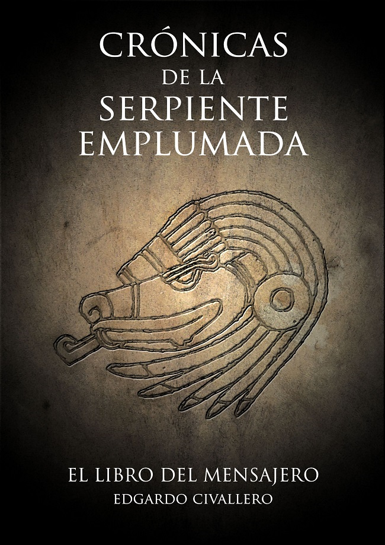
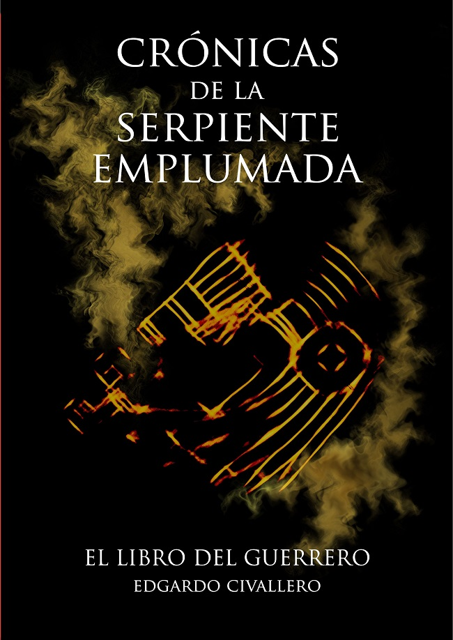
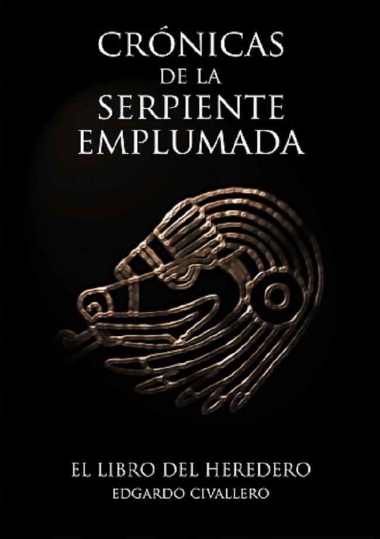
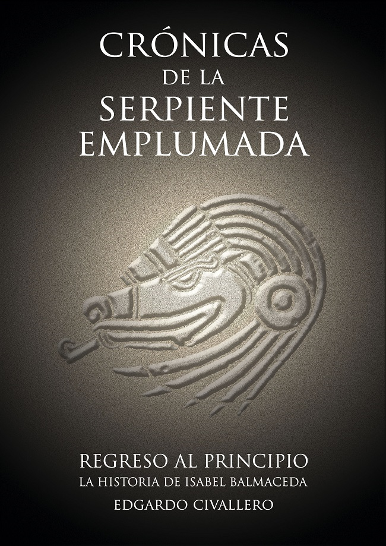
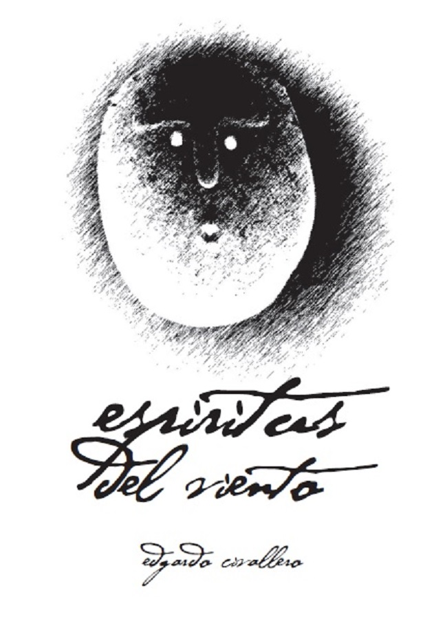
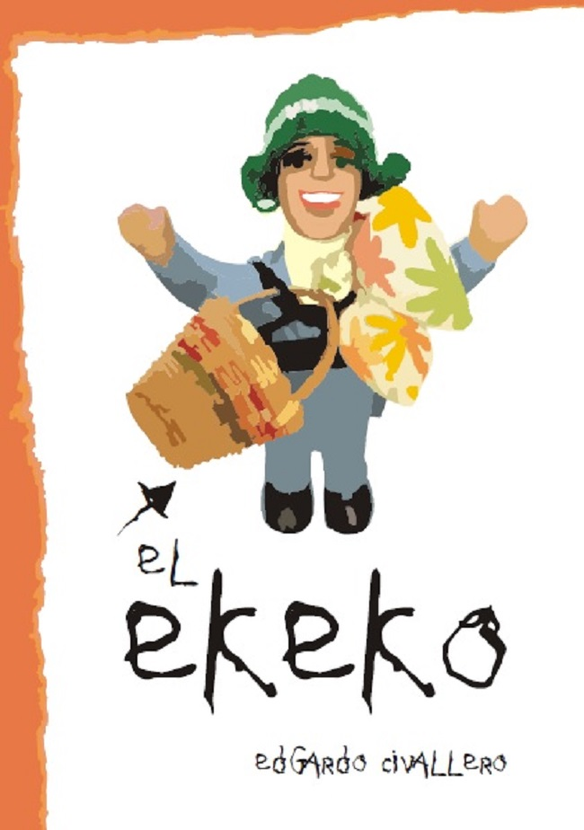

Novelas y cuentos
Inicio > Publicaciones > Novelas y cuentos
No recuerdo cuando fue que comencé a escribir. Recuerdo, sí, mi primer premio en un concurso literario, siendo adolescente, y los otros tantos que le siguieron. Recuerdo también el momento en el que publiqué el primer tomo de las Crónicas de la Serpiente Emplumada, con una editorial barcelonesa que quebró poco después de lanzar mi libro. Y recuerdo que, desde entonces, preferí publicar por mi cuenta, en formato digital, libre y abierto.
Aquí quedan, pues, algunas de las cosas que he ido produciendo en el campo de la ficción.
Todos los contenidos están protegidos por derechos de autor y se distribuyen a través de una licencia Creative Commons (ver copyright y disclaimer).

Crónicas de la Serpiente Emplumada (I).
El Libro del Mensajero
La saga Crónicas de la Serpiente Emplumada es una ucronía compuesta por cuatro tomos, basada en un argumento sencillo: durante su regreso a Castilla, las dos carabelas de Cristóbal Colón naufragan en el océano Atlántico, a tan sólo un centenar de millas del archipiélago de las Azores. La noticia de su descubrimiento desaparece sepultada bajo las aguas, y los hombres que quedaron en el Fuerte de la Natividad, en La Hispaniola, sin esperanzas ya de ver regresar al Almirante, emprenden un periplo que los llevará a las tierras de los taínos, los itzáes y los totonacas, para llegar finalmente a Tenochtitlan, el corazón del territorio de los mexicas. Años después, en la mañana del 1 de julio de 1521, una inmensa flota se aproxima al puerto de Cádiz. Porta un desconocido estandarte con la figura de una sierpe angulosa cubierta de plumas verdes: Quetzalcóatl. La conquista ha comenzado.
El Libro del Mensajero, publicado en noviembre de 2009, es el primer volumen de esta saga, la cual relata una aventura imaginaria que pudo haber sido verdadera. Fue, además, el único tomo de la serie que fue publicado en formato papel (Barcelona: Editorial El Andén). En aquel entonces, la historia estaba dividida solo en tres libros. Tras la desaparición de la editorial, las Crónicas fueron reorganizadas en cuatro volúmenes y publicadas en formato digital y autoeditado, con la opción de compra en papel a través de la compañía Bubok. En 2021 los cuatro volúmenes fueron revisados y reeditados: esa versión es la que se presenta en este sitio, para su descarga. Existen en Internet muchas otras versiones, retocadas por terceros sin permiso del autor. Además existen aún, en determinadas plataformas virtuales, ejemplares en papel pertenecientes a la edición original de Editorial El Andén.
[Descarga].

Crónicas de la Serpiente Emplumada (II).
El Libro del Guerrero
Los aventureros llegados a Tenochtitlan en 1493 organizan sus nuevas vidas en territorio mexica. Y comienzan sus obras, esas que dotarán al gran Imperio de armas y barcos. Años después, en 1521, Sevilla soportaría la visita de esos barcos y el embate de esas armas, en uno de los dramáticos episodios que marcarían la Historia de allí en más. La primera batalla entre las dos Tierras.
El Libro del Guerrero (junio de 2010) es el segundo volumen de la saga Crónicas de la Serpiente Emplumada, ucronía que relata una aventura imaginaria que pudo haber sido verdadera.
[Descarga].

Crónicas de la Serpiente Emplumada (III).
El Libro del Heredero
Las conquistas del ya poderoso Imperio mexica se extienden desde el mar del este al mar del oeste, y desde los desiertos del norte hasta las selvas del sur. No habrá pueblo en las Tierras del Oeste que no sienta el peso de sus armas, y que no se vea obligado a combatir o a someterse. Será ese mismo poder, ejercitado durante años, perfeccionado y multiplicado, el que pondrá en jaque a los monarcas de la vieja Europa. La historia de los actores de unos hechos que cambiarán la faz del planeta toca a su fin. Las consecuencias de esos hechos, sin embargo, no han hecho más que comenzar.
El Libro del Heredero (junio de 2010) es el tercer volumen de la saga Crónicas de la Serpiente Emplumada, ucronía que relata una aventura imaginaria que pudo haber sido verdadera.
[Descarga].

Crónicas de la Serpiente Emplumada (IV).
Regreso al principio
Perdidas por siglos, las Crónicas de la Serpiente Emplumada son el relato de la llegada de los barcos y las tropas mexicas al extremo meridional de Europa, y de todo lo que vino después. Cuando una bibliotecaria nativa castellana da con los tomos originales en un rincón perdido del Archivo de Toledo, comienza una aventura que la llevará a enfrentarse con la historia de su pueblo, y con la suya propia. A través de tal periplo, se encontrará con personajes cuyas andanzas deberá cerrar, y con sucesos que, hasta ese momento, habían sido deformados u ocultados por la "Historia Oficial".
Regreso al principio (enero de 2012) es el cuarto y último volumen de la saga Crónicas de la Serpiente Emplumada, ucronía que relata una aventura imaginaria que pudo haber sido verdadera.
[Descarga].

Espíritus del viento (2012) es un recorrido, narrado en primera persona, a través de las culturas indígenas del cono sur de las Américas y, al mismo tiempo, a través de una vida segada al ras antes de tiempo y de todas las preguntas que quedaron sin respuesta... Es una historia de tristezas antiguas y actores idos, pero también de paisajes inigualables, arraigadas costumbres y esperanzas aún vivas, a pesar de todo.
Escribí el texto original en 1998, tras mis primeros contactos con comunidades indígenas argentinas. Con el paso del tiempo (y la consiguiente evolución de mis perspectivas y opiniones) lo sometí a sucesivas revisiones y reescrituras, utilizando en todo momento las fuentes antropológicas e históricas más fiables como referencia. Le agregué un glosario en el cual, inicialmente, recogí algunas notas sobre los términos regionales y los vocablos indígenas que había ido incluyendo en la narración. Curiosamente, dicho glosario fue creciendo progresivamente hasta convertirse en un documento de una extensión equivalente a la del relato en sí, presentando un corpus de conocimiento resumido pero útil para aquellos lectores que se aproximen por vez primera a la realidad de los pueblos originarios.
La novela plantea una introducción literaria a la apabullante diversidad cultural de la América prehispánica, parte de la cual sigue vigente, a pesar de ser poco reconocida o valorada. Hace referencia a un amplio número de costumbres, actividades y elementos del cono sur americano, y emplea numerosas palabras y frases en lenguas indígenas. Pues sin todas ellas sería imposible una descripción adecuada del paisaje histórico y humano de ese rincón del mundo.
[Descarga].

El Ekeko (2010) es mi acercamiento a la literatura infantil y juvenil. La historia narra los avatares de una familia de inmigrantes bolivianos en España, vista desde la óptica de su hija de 10 años y del Ekeko, una figurilla de cerámica que, en los Andes, representa a una tradicional deidad hogareña de la buena fortuna. Si bien su contenido está enfocado hacia un público juvenil, también está dirigido a bibliotecarios, educadores y demás adultos interesados en conocer ─aunque sea desde este enfoque─ una pequeña parte del patrimonio cultural sudamericano en general y boliviano en particular.
[Descarga].